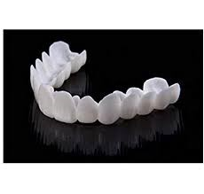
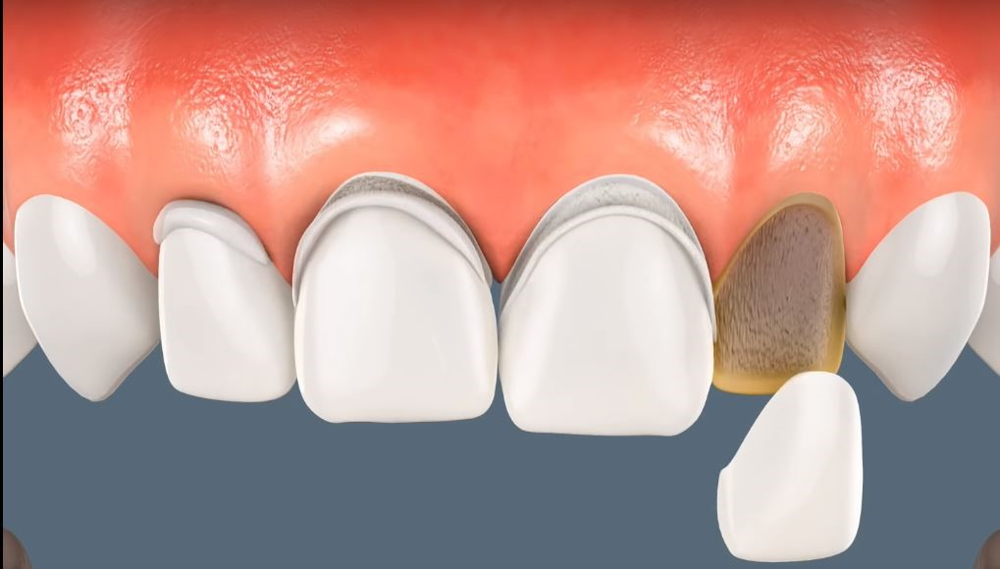

Dental Publications
This article explains the latest dental treatment techniques, and the most successful preventive measures for enjoying strong healthy teeth, in addition to dental implants, dental bridges, orthodontics, and other miscellaneous information

What is a veneer? - Veneers benefits and side effects
What is a veneer?
Dental veneers are thin, tooth-colored shells that cover the front surface of teeth to improve their appearance. They’re often made from porcelain or resin composite materials and are permanently bonded to your teeth.
Table of Content
- What is a veneer?
- Which type of veneer is the best for me?
- Permanent veneers
- My experience with veneers
- How to get rid of bad breath from crowns?
- Can Dental Veneers be removed?
- Anyone had veneers done in Turkey?
- Where to get veneers in Turkey?
- Why are veneers cheaper in Turkey?
- Which is better Veneers or Lumineers?
- Which is better Veneers or Crowns?
- Which is better Veneers or Implants?
- Which is better Veneers or Braces?
Veneers benefits and side effects
Veneers are a great way to improve your smile, they are a permanent procedure, it is important to have all the information and weigh the benefits and side effects before making a decision.
Benefits
- A bright white smile: If you are looking for an easier way to whiten your smile forever, then dental veneers may be the best choice for you.
- Repair minor cosmetic problems: Dental veneers can repair cracks, gaps between teeth, or discoloration, and they help correct many cosmetic dental problems.
- Compatible with gums and surrounding tissues.
Read more : Types of tooth decay, its stages and how to treat it
Side effect
- High cost: The price of veneers varies, depending on the type, country, and dentist.
- Sensitivity: Some people experience an increase in tooth sensitivity after installing veneers.
- Irreversible procedure: The dentist will need to remove a layer of the structure of the natural teeth, to place the veneers correctly.
Dental veneer materials
Dental veneers are made of porcelain or composite materials.
Porcelain dental veneers resist stains better than dental resin veneers and mimic better the properties of natural teeth.
Which type of veneer is the best for me?
In Ilajak Medical we evaluate every case independently and recommend the most suitable choice accordingly, however generally Zirconia porcelain veneers are often ideal for patients who have teeth that are more severely damaged or decayed.
Read more : Dental Implant in turkey : How, Advantages and Risks
Porcelain Veneers
Porcelain veneers resist stains better than resin veneers. They also better mimic the light-reflecting properties of natural teeth
Lumineers
Lumineers are a type of veneer that requires more advanced dental work and less preparation, compared to traditional veneers. They are often called "no-prep" dental veneers, as they are made of "very thin" shells.
Composite Resin
Composite veneer, a filling material that matches the natural color of the teeth, is placed in layers on the tooth surface, then hardening and polishing to achieve the desired aesthetic appearance.
CEREC Veneers
CEREC stands for Chairside Economical Restoration of Esthetic Ceramicsveneers It is a type of creative dental veneers, CEREC makes it possible to now design, produce and fit these delicate restorations in one visit.
Empress dental
Empress dental veneers refer to a special type of dental veneers, made from a material of pressed glass-ceramic, reinforced with lucite in several different colors, to help ensure that the veneers blend in and simulate seamlessly with natural teeth. It is characterized by:
- Empress veneers are ideal for covering discolored or defected teeth.
- They are stain-resistant, strong, and can be manufactured to match the natural tooth color.
Removable veneers
Removable veneers (or temporary veneers) are a product of the dental cosmetics industry that are slightly flexible plastic molded to fit over your entire upper or lower arch. They are a great option for improving teeth esthetic with minimal invasion.
Removable veneers disadvantages
- It is not a permanent solution for missing or broken teeth.
- Less durability than fixed veneers.
Removable veneers advantages
- Designed to match the teeth, and can be removed when needed.
- lower cost.
- It does not require to remove a layer of enamel.
- Removable veneers can be used for other therapeutic purposes other than aesthetics, such as joint comfort or as night grinding guard.
- Easy to clean.
Removable veneers cost
The cost of removable dental veneers is lower than traditional veneers, as the prices of dental veneers in Turkey generally range between 500 to 1000 USD.
The shelf life of using removable veneers
The shelf life of removable veneers depends on hygiene and care, on average removable veneers can last for up to 5 years.
Our Medical Service : Dental Treatment in Turkey

Permanent veneers
A fixed and permanent cosmetic procedure that improves the appearance of the teeth, which leads to an improvement in the smile making it bright white.
Permanent veneers disadvantages
- Permanent procedure: cannot be reversed during or after the procedure, because a layer of enamel is removed to bond the veneers on the teeth.
- Tooth sensitivity: If you have a sensitivity to hot or cold drinks or foods, due to enamel loss, dental veneers may increase the possibility of their persistence or exacerbation.
- Potential veneer damage: Although porcelain dental veneers are extremely durable, they can get accidentally damaged. In most cases, however, your dentist can simply reinstall it, but if cracked, it may need to be replaced.
Permanent veneers advantages
- Long-lasting: Porcelain dental veneers are very durable, and can easily withstand daily wear and tear for many years, as long as they are well maintained.
- Natural appearance: Mimics the natural look and shape of tooth enamel, porcelain dental veneers are characterized by high quality and transparency, making them reflect light gently, resulting in a healthy and white look.
- Instant smile improvement: Veneers lead to a beautiful smile instantly. It does not require multiple visits, and you can come in with a bad smile, and leave with a truly wonderful new smile.
- Stain Resistant: Porcelain dental veneers are stain-resistant, even if you tend to consume stain-causing foods and drinks like coffee and tea. Cause it is made of durable ceramic, stains are easily removed, just as they would with a glass surface.
- Hide the signs of aging on the teeth: As we age, the teeth may start to appear duller, more crowded, or worn out. Dental veneers can correct and mask the signs of aging, giving you a more youthful look.
The advantages of dental veneers clearly and significantly exceed their disadvantages. We work in Ilajak Medical to minimize disadvantages as much as possible, by choosing the best products and the most appropriate treatment plans.
Permanent veneers cost
The price of veneers per tooth is estimated at approximately 180 euros, in Ilajak Medical we offer the best types of veneers by the most skilled dentists.
How long do permanent veneers last?
The lasting of permanent dental veneers depends on whether they are made of porcelain or composite, and how well are they maintained.
Fixed veneers can generally last 10 to 12 years.
My experience with veneers
People in this regard are divided into two, one advising to go for it, while others oppose it, one team seeing it with many positives, and another criticizing it for its negative aspects.
There is no doubt that dental veneers have some drawbacks, such as the high cost and filing of the enamel layer, but the positives outweigh the negatives, and this procedure is optionally chosen by many who wish to improve the appearance and aesthetics of their smile, besides, to people who suffer from problems with their teeth, Such as fractures, cracks, and pigmentation.
In general, everyone who had this experience expresses their satisfaction with the results, but some express their anger over some things like enamel filing, some sensitivity if any, frequent visits before the final procedure.
It is worth noting that Ilajak Medical offers a free consultation, explain all points related to dental veneers in Turkey, and answer all queries.
Read More : Advanced Technologies Of Dental Treatment In Turkey
How to get rid of bad breath from crowns?
If porcelain veneers are not installed properly, they can create small edges around the veneer, allowing food particles and mouth bacteria to accumulate. So this results in a store of oral bacteria, which can then contribute to decay, gum disease, and of course, bad breath.
So its better to avoid such practice to prevent unwanted results including bad breath.
Can Dental Veneers be removed?
Dental veneers can be removed, leaving the tooth somewhat intact, depending on the skill of the dentist, but there should be no reason to do so.
We at Ilajak Medical offer high quality and properly fitted dental veneers, since the begining, so you will not need to remove them anytime soon.
Anyone had veneers done in Turkey?
Turkey is among the top 10 in the health sector in the world with its health infrastructure and quality of tourism potential as a Medical Tourism Destination. Turkey has hosted hundreds of thousands of visitors for dental & medical tourism in recent years.
Where to get veneers in Turkey?
Ilajak Medical's name has shine and became famous in recent years for its top quality services and reasonable prices.
Why are veneers cheaper in Turkey?
The main reason dental care in Turkey is cheap is the governmental support and facilitation for medical tourism, in addition to that the overall operation costs, including laboratory costs and dentist fees, are lower compared to places like the UK or the US. Some estimates suggest that dentist prices in Turkey are 70% less compared to Europe, the UK, and the United States.
Read More : Dental Implants in Turkey
Which is better Veneers or Lumineers?
Veneers:
- Veneers require more preparation to bond to your teeth.
- They're irreversible, but they last more than lumineers.
- There are very effective at hiding severely stained or damaged teeth.
Lumineers:
- Lumineers require less preparation to bond to your teeth.
- They're also potentially reversible, but they don't last as long as veneers.
- They're also not as effective at hiding severely stained or damaged teeth.
Which is better Veneers or Crowns?
Veneers:
- Veneers cover just the front of the tooth.
Crowns:
- The Crown covers the entire tooth.
Which is better Veneers or Implants?
Veneers:
- Veneers only cover the front surface of the tooth
Implants:
- Implants, on the other hand, replace the entire tooth.
Which is better Veneers or Braces?
Veneers:
- Veneers are considered cosmetic.
- Veneers are used to fix cosmetic problems like discoloration, chips, stains, or small gaps between your teeth.
Braces:
- Braces are considered structural.
- Braces can fix anatomical misalignment or problems like an overbite, underbite, and crossbite, among others.
Ilajak Medical© | A passion for care.
Latest Articles, Health News, Clinical Research, and more.
Keratoconus and cataracts , symptoms and types
What is Keratoconus, How it looks and what are the symptoms? Also, find out Keratoconus’s types and stages , Learn more with ILAJAK Medical.
Best Spa Resorts with Medical Services clinics in Turkey.
In this article, we will learn about the importance of health resorts and the treatment services they offer and the top and famous health & medical resorts in Turkey
Zirconia teeth type and costs in Turkey 2021
Zirconia dental crowns and bridges are used to treat and protect the affected teeth due to decay or fractures, etc, In this article we will learn about the advantages and drawbacks of Zirconia Crowns and bridges
Benefits of porcelain teeth and costs in Turkey 2021
Porcelain crowns and veneers are used to strengthen and protect damaged teeth due to decay or cracks or any other reason. In this article, we will discover dental porcelain and its advantages and risks.